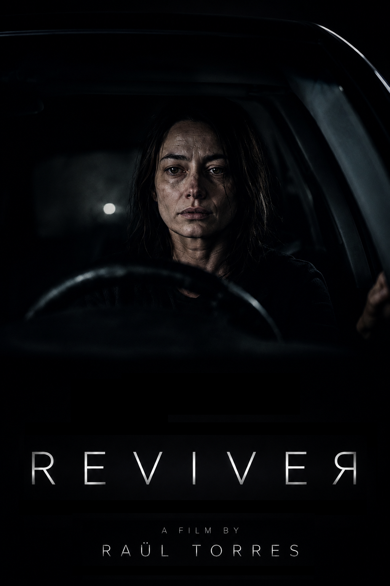
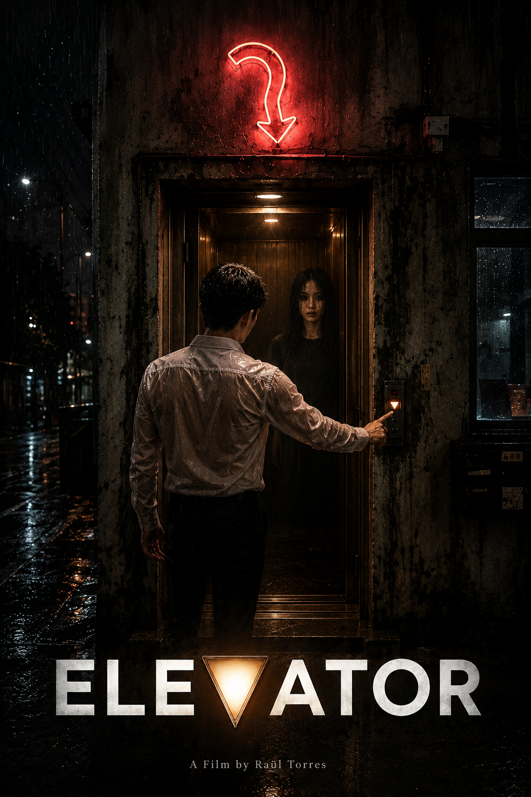
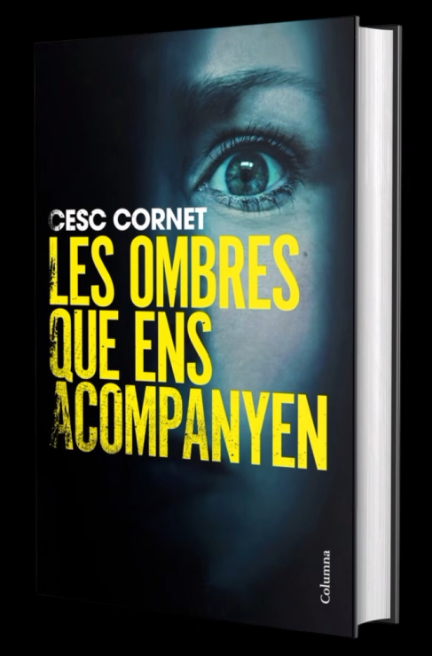
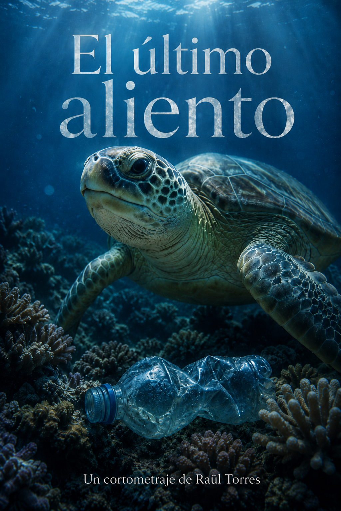
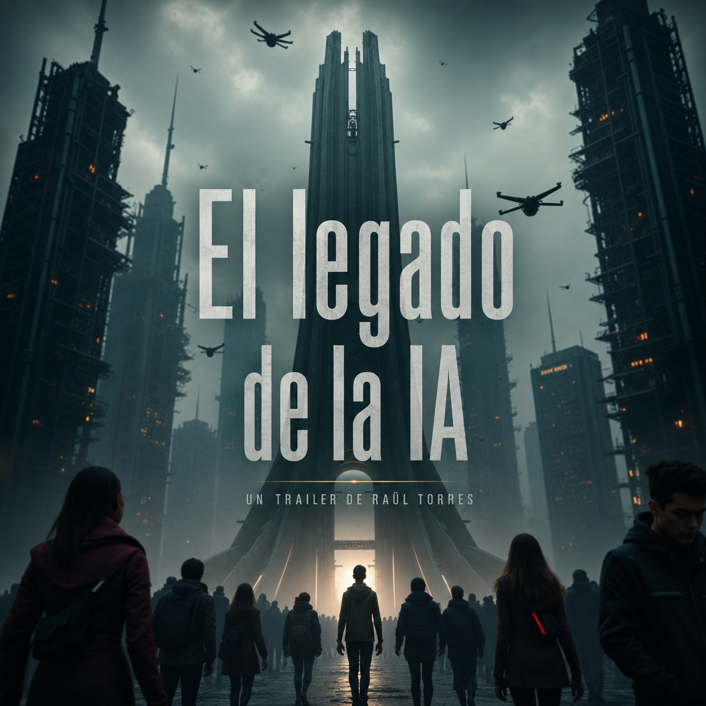

About
A camera, a story, a new language
I am an audiovisual creator working at the intersection of storytelling and artificial intelligence.
I began my journey in cinema in 2002, creating guerrilla-style short films with minimal resources, but with a deep attention to narrative and visual expression. After a period away from the medium, I returned with a renewed perspective, incorporating artificial intelligence as a creative tool capable of expanding the possibilities of audiovisual language without replacing the human vision behind each story.
My work explores how technology can serve emotion, meaning and cinematic language. I am especially interested in creating pieces that connect with audiences on a human level, using innovative techniques to strengthen storytelling rather than distract the viewer from it.
Projects like POWER OFF reflect this philosophy: combining visual experimentation, technological exploration and a clear narrative intention with a strong emotional core.
This portfolio brings together my recent work in AI-driven filmmaking, where each project represents a new step in the search for contemporary forms of audiovisual expression, always with narrative and emotion as the central axis.
"GenAI tools expire quickly, but storytelling lasts forever"

REVIVER
REVIVEЯ is a reflection on the fragility of human decisions, the weight of fate, and the profound impact of those fleeting moments that can change a life forever.
An intimate story about hope, second chances, and the thin line between an ordinary moment and an irreversible turning point.
Technologies used
- Concept, script, and direction: Raül Torres
- Assisted by ChatGPT 5.5
- Character and Environment Design by Midjourney 8.1
- Character and Environment Consistency by GPT Image 2.0
- Model of Vído Seedance 2.0
- Editing by Filmora 14

ELEVATOR
A man enters an old elevator on a rainy night.
As it descends, an unsettling sense of strangeness begins to take hold of him.
Through silence, lingering glances, and an increasingly oppressive atmosphere, the journey leads him toward a place where nothing is quite as familiar as it seems.
Finalist
- SEOUL INTERNATIONAL AI Film Festival 2026
Technologies used
- Assisted by ChatGPT 5.5
- Character and Environment Design by Midjourney 8.1
- Character and Environment Consistency by GPT Image 2.0
- Editing by Filmora 14
- Concept, script, and direction: Raül Torres

POWER OFF
On one side, a mother and her daughter survive in an environment devastated by war.
On the other, a mother and her daughter live peacefully, unaware of the chaos outside.
Same gestures. Same moments.
Two opposing realities moving in perfect synchrony... until everything breaks.
Awards
- Best Concept Award: LAAIMPA WINNERS APRIL 2026 - Los Ángeles
Finalist
- Finalist AI Movie Awards - Mallorca
- Quarter-Finalist AI Awards INDIA
Official Selection
- BAIFF - Burano Artificial Intelligence Film Festival
- AI Film Awards in Cannes 2026
- TODO ES PROMPT - Chile
- IA en CORTO - Chile
- ICJ International Film Award - Ukraine
- SEOUL INTERNATIONAL AI Film Festival
- AI Film Awards INDIA
Platforms where POWER OFF is featured
-
JAMESDRAKE TV
James Drake TV (JDTV) is a creative platform and YouTube channel focused on the dissemination of art, history, and science through the use of artificial intelligence to create cinematic narratives.
-
Cinferno
Selected to be part of the showcase of the year's top 100 AI films.
Technologies used
- Image and video: Nano Banana Pro, Kling 3.0
- Sound: Suno AI, Eleven Labs
- Editing: Filmora 14
- Concept, screenplay and direction: Raül Torres

Les ombres que ens acompanyen
Book trailer created for writer Cesc Cornet for his novel "Les ombres que ens acompanyen".
Three stories. Two cities. No apparent connection... and a breathtaking finale.
A multi-threaded thriller that will keep you on edge.
A thriller set between Barcelona and Vizcaya, where three seemingly unrelated cases gradually intertwine until they converge in a heart-stopping ending. Pure adrenaline.
AI tools used
- Veo 3.1
- Nanobanana Pro
- Suno
- Filmora 14

El último aliento
A powerful micro-documentary exploring the devastating effects of plastic waste on our oceans and the urgent need to protect marine life.
Tools used
- Video generated with Veo 2
- Sounds created with MMAudio (local)
- Voice with Eleven Labs
- Music composed with Suno
- Assembly and editing in Filmora 14

Trailer: El legado de la IA
A Cinematic Concept Trailer Created Entirely with Artificial Intelligence.
Tools used
- Video generated with Runway
- Character design with Flux.1
- Assisted with ChatGPT 4
- Voice with Eleven Labs
- Music composed with Suno
- Assembly and editing in Filmora 13
Platform
Shoowai Founding Creator
I have been invited to join Shoowai as a Founding Creator, an international platform dedicated to creators and filmmakers working with artificial intelligence.
Shoowai is designed as a curated and professional space where creators can showcase their projects, connect with other professionals, offer creative services, and share digital assets within a community focused on quality, innovation, and the new possibilities of AI filmmaking.
Contact